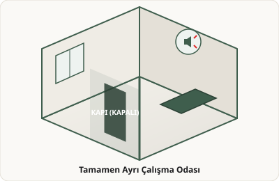
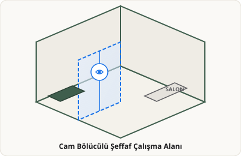

1A. Tamamen Ayrı Çalışma Odası
Ana yaşam alanından duvar ve kapı ile tam izole kapalı çalışma mekânı.

1B. Ortak Yaşama Bağlı Çalışma Alanı
Yaşam alanına görsel olarak açık veya alçak bölücü ile bağlı çalışma alanı.

Ana yaşam alanından duvar ve kapı ile tam izole kapalı çalışma mekânı.

Yaşam alanına görsel olarak açık veya alçak bölücü ile bağlı çalışma alanı.